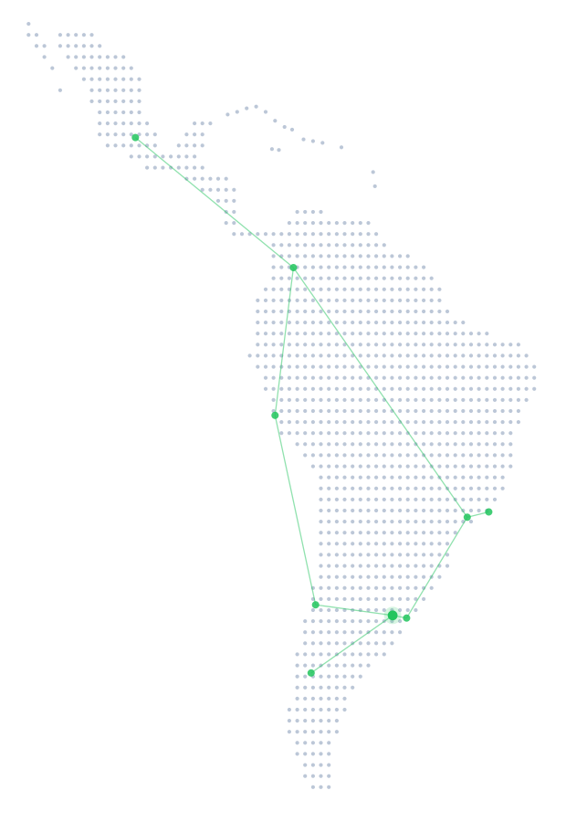

Las grandes comunidades empiezan con una conversación.
Great communities start with a conversation.
As grandes comunidades começam com uma conversa.
 English
English Español
Español Português
Português